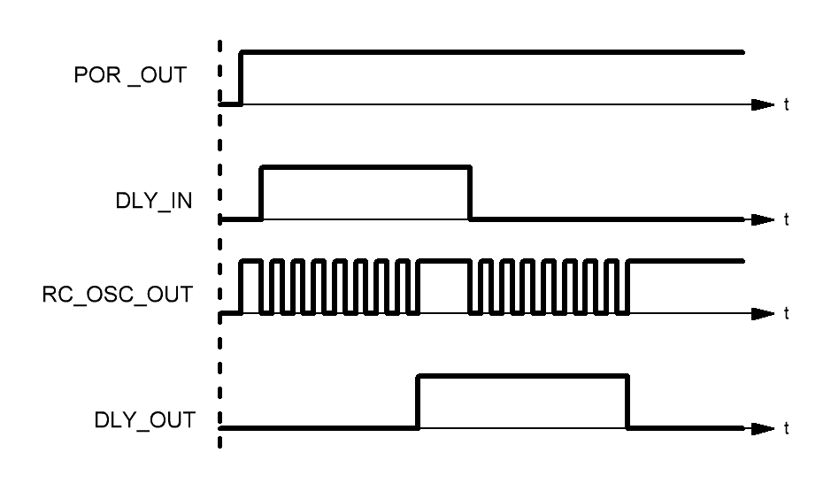

The RC oscillator frequencies are 25 kHz or 2 MHz (user selectable). An External clock source can also be used.
The Oscillator block generates the clocking signals. the 25 kHz and 2 MHz have different levels of current consumption. The higher the frequency, the higher the current consumption.
Most clock source connections in the GPAK3 are hardwired. These connections are completed by selecting the desired clock from the counter/delay block that is being clocked. The RC OSC with no divider does not show a connection wire in the Designer; however, other clocking wires will be shown when the connection is made in an orange color.
If PWR DOWN input the oscillator is LOW, the oscillator will be turned on. If PWR DOWN input of the oscillator is HIGH, the oscillator will be turned off. The PWR DOWN signal has the highest priority.
The internal oscillator can dynamically cycle power based on the needs of the delay blocks. The below figure shows how the OSC turns on whenever a signal on the DLY block arrives and runs until the delay is completed (marked by the rise in DLY_OUT). The clock then powers down until it needs to clock the delay for the falling edge and powers back up. Once the delay for the falling edge is completed, the clock powers down once again. It is important to note that CNT blocks do not cause the clock to power up, in which case the OSC Power mode should be set to Force power on.

Figure 1.
• Auto power on: will automatically Power down and Power up the OSC. See Auto power on above;
• Force power on: will run the OSC continuously;
Muxes between RC OSC and Ext CLK from PIN13.
• RC OSC: internal oscillator;
• Ext Clk(from PIN13): is an input pin to the OSC. It can be configured from PIN13 set as Digital Input;
The RC OSC can be set to the following two frequencies.
• 25kHz;
• 2000kHz;
a divider internal to the OSC block that divides the selection from Clock selector. Choices are /1, /2, /4 and /8.
Additional division after the predivider. Choices are /1, /2, /3, /4, /8, /12, /24 and /64.
Additional division after the predivider. Choices are /1, /2, /3, /4, /8, /12, /24 and /64.